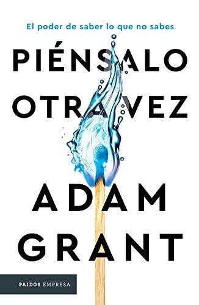

Piénsalo otra vezAdam Grant

Piénsalo otra vez
Adam Grant
Sobre el valor de dudar de lo que creemos saber: cómo reconsiderar opiniones, discutir sin pelear y crear entornos donde cambiar de idea no sea una derrota.
- Publicado originalmente
- 2021
- Enfoque
- Divulgación científica
- Para quién
- Público general
- Ficha bibliográfica
- Open Library
Este libro tiene derechos de autor, así que no lo alojamos. Te dejamos la ficha para que sepas de qué trata y lo busques en una librería o biblioteca.
Pensamientos, creencias y sesgos cognitivosFlexibilidad cognitivaRazonamiento motivadoComunicación, medios y creenciasCambio de creencias